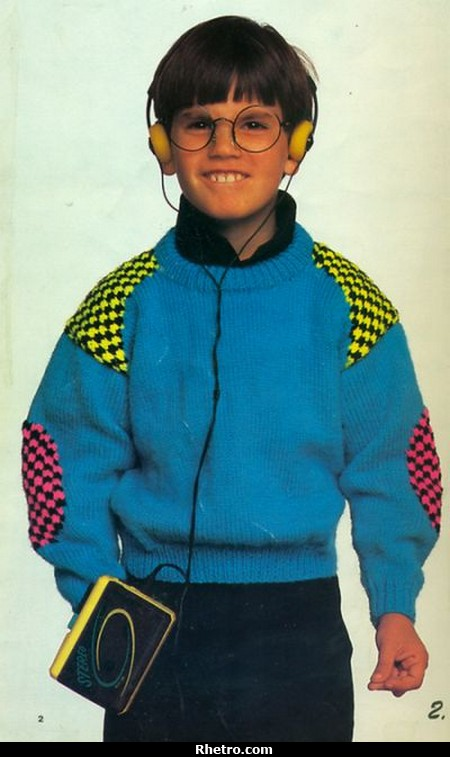

March 2013
RaspberryPi Kick-Start for Educators @ The Powerhouse Museum
Twitter: #ozberrypi Web: http://www.ozberrypi.org/
Welcome!
- Teachers?
- First timers?
- About me
Some history

Previously... back in the 1980's...



Something had changed the way kids were interacting with computers. A number of problems were identified ... and the rise of the home PC and games console to replace the Amigas, BBC Micros, Spectrum ZX and Commodore 64 machines that people of an earlier generation learned to program on.http://www.raspberrypi.org/about
* Discuss *
Technology consuming devices vs Technology creating devices
To: Australian Curriculum, Assessment and Reporting Authority (ACARA)
I believe that:
- Students should be taught how to create technology, rather than simply consume it.
- Students should learn to use and develop technology to solve real-world problems
- Students should be encouraged to think entrepreneurially and strive to lead Australia into international esteem.
Enter The RaspberryPi
Eben Upton

Introduction to Scratch on the RaspberryPi
Hardware interfacing Basics

Please welcome Peter
Door Prizes...
About OzBerryPi
- Mailing List: ozberrypi@googlegroups.com
- Web: http://www.ozberrypi.org
- GitHub: https://github.com/ozberrypi
Thanks to our sponsors! :)
THE END
Thank you!
andrew.stone@drivenlogic.com.au
Twitter: @DrivenLogic
Buy a RaspberryPi:
http://downloads.element14.com/raspberryPi3.html
Further reading:
http://www.raspberrypi.org/archives/tag/kids http://learn.adafruit.com/category/raspberry-pi http://www.cl.cam.ac.uk/projects/raspberrypi/